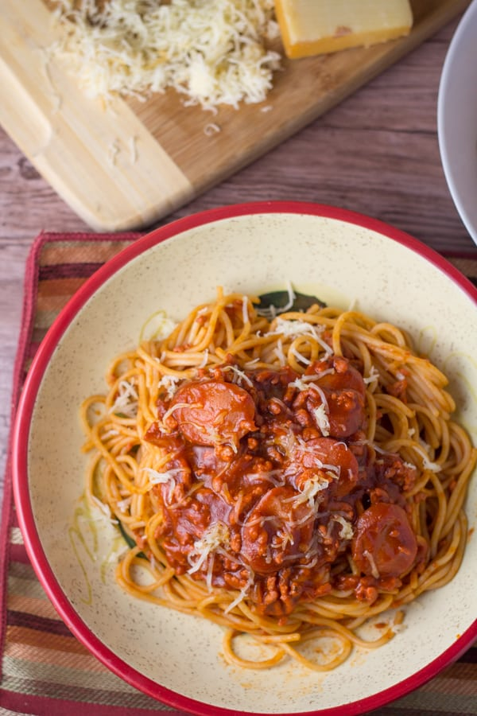

Filipino Spaghetti

Description
This recipe is every kid’s favorite – Filipino Spaghetti – and comes from the orphanage that I worked at for a year in Cebu.
Spaghetti, hot dogs, tomato sauce, and seasonings. So simple, so good.
Ingredients
- 1 lb. spaghetti noodles
- 1 lb. Italian tomato sauce (the kind they used was called “Italian” but tasted sweet and was very smooth in texture)
- 8 ounces tomato paste
- 2 tablespoons minced onion
Steps
- Cook the noodles according to package directions. Set aside.
- Place the garlic, onion, and oil in a large saucepan or skillet. Saute for 3-4 minutes or until soft and fragrant. Add the ground pork and brown the meat until it’s completely cooked.
- Add the minced vegetables and hot dog pieces and stir to combine. Add the water and allow the mixture to simmer for 10-15 minutes. Add the tomato sauce and tomato paste to the meat and continue to simmer the mixture for another 10-15 minutes. Add the evaporated milk and salt and stir until incorporated.
- Combine the noodles and the sauce in a large pot or mixing bowl. Top with grated cheese. At Cherne they grate a processed cheese similar to Velveeta and let it melt into the top layer of the spaghetti.